Answers · how-tos · get in touch
Support
Small questions matter too.

Frequently asked questions
A clear way
back in.
If something feels stuck, start here. The short answers are meant to get you moving again without making you read a manual.
How do I restore a purchase?
Open dab-dab → Settings → Restore purchase, or use Restore on the unlock screen. Make sure you are signed in with the Apple Account used for the purchase. A lifetime unlock bought in an earlier version of dab-dab is recognised too, so updating never asks you to buy again.
How do I manage dab-dab+?
Subscriptions are managed by Apple in iOS Settings → your name → Subscriptions → dab-dab+. A lifetime unlock is a one-time purchase and does not renew.
What is free, and what does dab-dab+ add?
dab-dab is free to use every day: write, draw, add photos, keep your whole Year Wall, and make your first tape and your first stamp. dab-dab+ adds more room on every page, all the writing fonts, the full drawing kit, every paper, advanced photo craft, and your page and sticker tins on the home screen. The unlock screen in the app always shows the current list and the price in your own currency.
What happens if dab-dab+ ends?
Nothing you made is taken away. Your pages, notes, drawings and photos stay where they are, and tapes and stamps you have already made stay yours to use. Making or changing more of the extras needs dab-dab+ again, and picks up where you left off if you re-subscribe.
How do I share a page?
Open the menu at the top right and choose Share. Pick Page, Square or Story, then Share to send it anywhere, or Save to put it in your Photos. dab-dab never uploads anything itself.
What do the widgets show?
Touch and hold your Home Screen, tap +, and search for dab-dab. With dab-dab+ the Today widget shows your page and the Open Tin widget puts a sticker tin on your Home Screen. Without it, the Today widget is a quiet invitation: the date and a way straight into drawing or writing.
Will my journal come to a new phone?
dab-dab keeps its working data on your device. A regular iCloud or computer backup is what carries the journal to a new device; there is no separate server copy for us to recover.
Does dab-dab work on iPad?
Yes. dab-dab is universal across iPhone and iPad, with the page adapting to the available space.
Where can I read the privacy policy?
Read the full policy on our dedicated privacy page. It explains what stays on-device, how backups fit into that picture, and what happens when you share something.
Still need a hand?
Say hello to the maker.
Questions, bugs, ideas, or a quiet hello are all welcome.
Useful places
Keep the links
close.
Privacy and support are deliberately separate from the marketing pages, so the practical information stays easy to find.